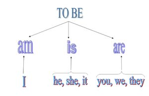
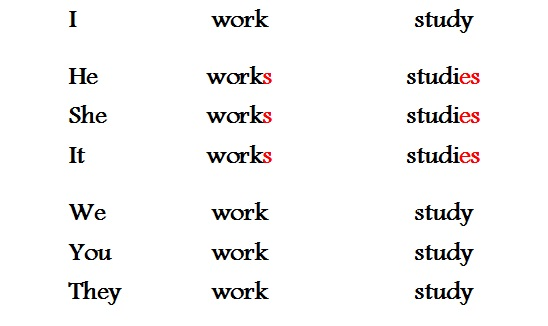

Время Present Simple, употребление и образование.
Употребление Present Simple.
Используя Present Simple вы говорите о том, что: упомянутое действие происходит вс егда; это общеизвестный факт; это критерий, описывающий объект в настоящем в ремени(это относится только к глаголу "to be"). Обычно мы используем это время с такими обстоятельствами как:
Usually - обычно
Every day/week/month/year - каждый день
Always - всегда
Never - никогда
и т.п.
Глагол "to be" в Present Simple Tense
Глагол "to be" нужен для того, чтобы указать на качество/признак предмета, п ричем они могут быть выражены чем угодно. ПРИМЕРЫ: He is a boy (он мальчик); I am at home(я дома); The books are interesting(книги интересны). Частицы "am", "is" и "are" - это и есть глагол "to be". В настоящем времени этот глагол спрягается, принимая определённую форму. Форма глагола зависит от местоимения или слова, употреблённого вами. Ниже представлена таблица, демонстрирующая спряжение глагола "to be" в Present Simple. Образование Present Simple
Образование этого времени присходит согласно формуле: V/Vs. Эта формула работает только при условии, что мы не используем глагол "to be", а какой-то другой, например "work". Что значит эта формула? Она говорит о том, что если мы используем мн.ч. или местоимение "I", то мы не меняем форму глагола. А в третьем лице к глаголу добавляем окончание "-s" или "-es"(лишь в некоторых случаях). Всё это отражено в таблице ниже.
Это всё,что нужно знать о Present Simple в Positive sentence. Ознакомиться с материалом можете на сайте википедия